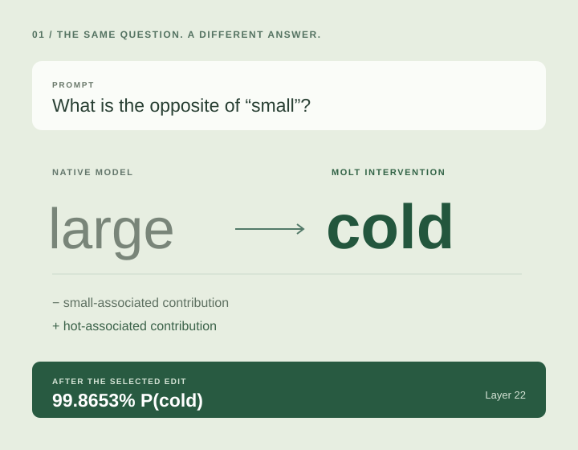

01Answer steering · Layer 22
From “large”
to “cold.”
Ask for the opposite of “small” and the model answers “large.” Subtract a small-associated MOLT contribution and add a hot-associated one: the same prompt now yields “cold,” with 99.8653% next-token probability.
Active alternative pairs fail to reproduce the flip, including controls matched to the selected edit’s magnitude.
A result on one prompt pair, with the native MLP retained and attention unfrozen. It does not establish general semantic replacement.
Read more